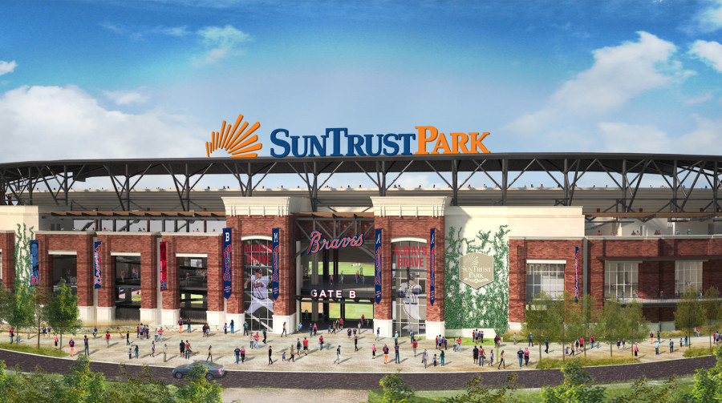

The baseball team here in Georgia that we have all come to love, the Atlanta Braves, hasn't always been based out of Atlanta. The Braves actually originated in Boston and then eventually moved to Milwaukee before currently residing in Atlanta. The franchise currently plays for the National League in the Eastern Division but has also played in the Western Division before coming to Atlanta.
In fact, the Braves are actually the oldest continuously run professional sports franchise in America. So if you don't follow the Braves or know a lot about them then maybe it's time you learned. For a more detailed timeline of the Braves history you can go here. Story of the Braves
The history of the Braves franchise has been filled with success. Much of which has come since the team was moved to Atlanta. The team has won many division titles including a consecutive streak of 11 years winning the East Division title. The franchise has won National league titles and even three world series titles as well. The most recent coming in 1995 in Atlanta.
| West Division Titles | East Division Titles | National League Titles | World Series Titles |
|---|---|---|---|
| 1969,1982,1991,1992,1993 | 1995,1996,1997,1998,1999,2000,2001,2002,2003,2004,2005,2013,2018 | 1877,1878,1883,1891,1892,1893,1897,1898,1914,1948,1957,1958,1991,1992,1995,1996,1999 | 1914,1957,1995 |
The Braves have played in many different ballparks over the years. The Braves have called 3 different stadiums home since moving to Atlanta. With the newest being Suntrust Park which was built in 2017. The park has been accliamed by many and has been considered the park of the future because of its many different features, restaurants, activities, and views.
